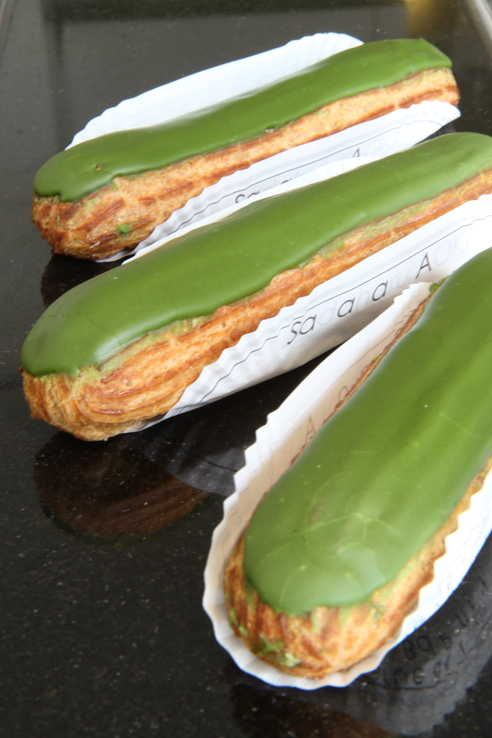
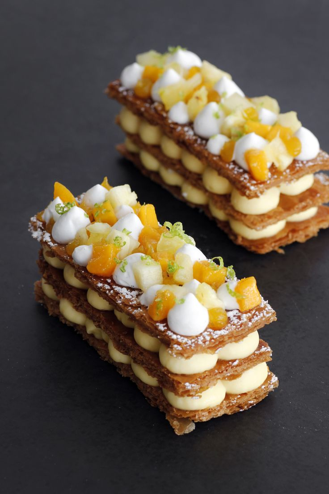
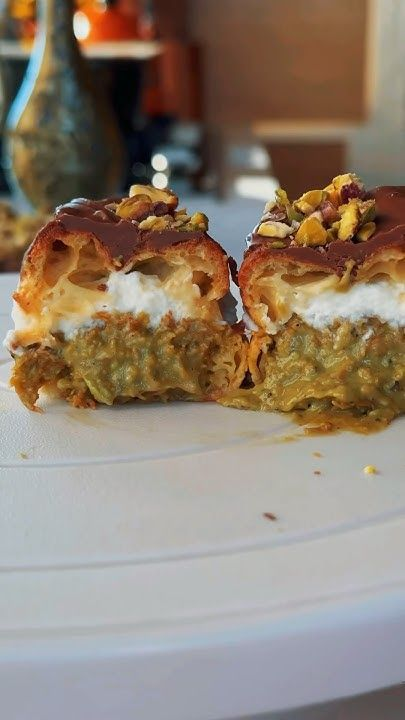

Yükleniyor...
MENÜ
EKLER ÇEŞİTLERİ
EN ÇOK TERCİH EDİLENLER

Matcha Ekler 4,5✯
İçerik: İç kısmı zengin, kremsi bir vanilya kremasıyla doldurulmuş, ancak üzerine matcha (yeşil çay tozu) sosu eklenmiş bu ekler, Japon mutfağından ilham alır. Hem tatlı hem de hafif acımsı yeşil çayın eşsiz lezzetini sunar.

Tropikal Ekler 5✯
İçerik: İç kısmı hindistancevizi kreması veya ananaslı krema ile doldurulmuş bu ekler, tropikal meyve tatlarını sevenler için mükemmel bir tercihtir. Üzeri mango, papaya veya guava soslarıyla süslenebilir.
Beyaz Çikolatalı Çilekli Ekler 4✯
İçerik: İç kısmı beyaz çikolata ve çilek kreması ile doldurulmuş olan bu ekler, taze çilek dilimleriyle süslenir. Hem beyaz çikolatanın tatlılığı hem de çileklerin asidik lezzeti mükemmel bir uyum sağlar.
